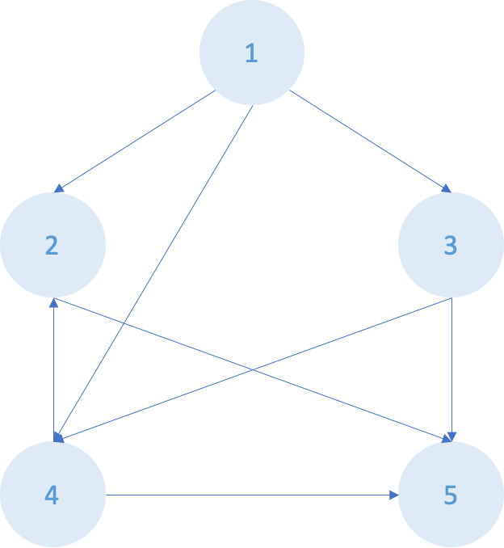

[ALGO] Dijkstra 알고리즘
알고리즘 Dijkstra 정리
코딩 테스트를 위한 알고리즘 정리글
Dijkstra
- 사용 시점
- 하나의 정점에서 다른 정점들까지의 최단거리 구하기

- 그래프가 있을 때, 시작 정점은 0으로 나머지는 INF로 초기화
- 가장 가까운 정점 s 선택(첫 번째: 시작 정점)
- 정점 x 거리 = Math.min(정점 x 거리, 정점 s 거리 + s-x 간 가중치)
- 업데이트 후, 그 다음으로 가까운 정점 선택
- 2-4 반복
우선순위 큐로도 가능함(Priority Queue - 꺼내기: poll, 넣기: offer)
- 처음 정점 선택 후 정점과 연결된 노드들 queue에 넣음(거리와 INDEX 필요)
- 거리 배열에 거리 계산하여 넣음
- 이때, 업데이트 한 거리가 더 짧을 때 queue에 다시 넣어준다.